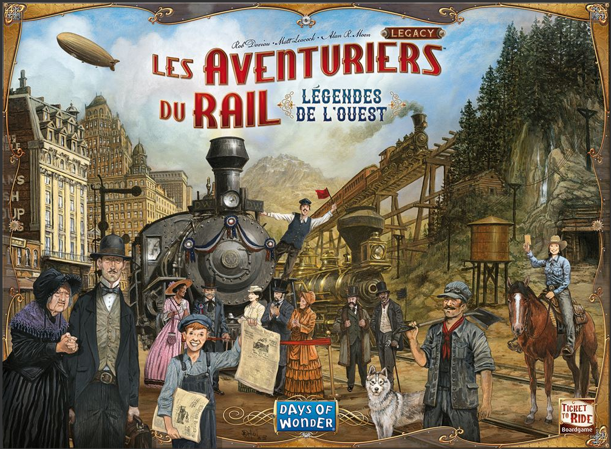

Aventuriers du rails
Le projet du semestre 2 de l’année 2022/2023. Jeu de société en application JAVA. Ce projet était coupé en trois étapes : le développement Technique du jeu, une partie algorithmique liée au jeu et aux graphes et le développement d'interface graphique. Ce projet était à réaliser en duo et dont la durée était d'environ 4 mois. Ce projet représente tout le savoir acquis dans le domaine du développement durant la première année du BUT informatique.
Compétence travaillée lors de ce projet :
Élaborer une application informatique, faire évoluer une application informatique, améliorer les performances des programmes dans des contextes contraints , lancer un nouveau projet
Apprentissage Critique
AC21.01, AC21.03, AC31.02, AC11.04, AC12.01, AC12.02, AC22.03 AC32.01, AC32.02, AC15.01, AC16.04, AC26.03, AC26.04
Plateau du jeu (partie IHM) crée par moi et mon duo
Affiche du jeu de société
Fonction AfficherGrille
Sudoku
Le projet Sudoku est le projet du premier semestre de l’année 2023/2024. Ce projet de début d'année consistait à écrire l'intérieur des fonctions données par le prof Afin de faire marcher le jeu. Le projet était à réaliser en duo et dont la durée était d'environ 3 mois.
J'ai effectué les fonctions : copieMatrice, ensPlein, supprime, afficheGrille, initGrilleComplete, saisirGrilleIncomplete, suppValPoss, initPartie, chercheTrou, tourOrdinateur, partie et main
Compétence travaillée lors de ce projet :
Élaborer une application informatique, lancer un nouveau projet.
Apprentissage Critique
AC21.01, AC21.03, AC31.02, AC11.04, AC12.01, AC12.02, AC22.03 AC32.01, AC32.02
Train
Projet du semestre 2 de l’année 2023/2024. Projet d'un jeu de plateau Avec beaucoup de cartes adaptées en application informatique. Projet coupé en trois parties : Partie technique, partie graphe et partie IHM. Ce projet était à réaliser en duo et dont là La durée était d'environ 4 mois. Ce projet représente tout le savoir acquis dans le domaine du développement durant la première année du BUT informatique. J'ai Principalement effectuée la partie IHM et la moitié de la partie technique.
Compétence travaillée lors de ce projet :
Élaborer une application informatique, faire évoluer une application informatique, améliorer les performances des programmes dans des contextes contraints, lancer un nouveau projet
Apprentissage Critique
AC21.01, AC21.03, AC31.02, AC11.04, AC12.01, AC12.02, AC22.03 AC32.01, AC32.02, AC15.01, AC16.04, AC26.03, AC26.04


Site vitrine "La légende oubliée de Drak'Taros"
Le projet de début d'année 2023/2024, ce petit projet permet plus d'apprendre le travail d'équipe ainsi que ces coéquipiers que de la technique au niveau de la programmation. Ce projet nous permet d'apprendre aussi à bien formaliser ces propos auprès d'un ou plusieurs clients. Ce rendu n'est que le résultat du site vitrine écrit pour présenter l'escape game d'une équipe cliente. La création du site vitrine, c'est fait en environ 2 semaines. Je me suis occupé du CSS du site.
Compétence travaillée lors de ce projet :
Organiser son travail en relation avec celui de son équipe, Élaborer, gérer et transmettre de l’information, lancer un nouveau projet.
Apprentissage Critique
AC15.01, AC15.02, AC25.02, AC16.04, AC26.04